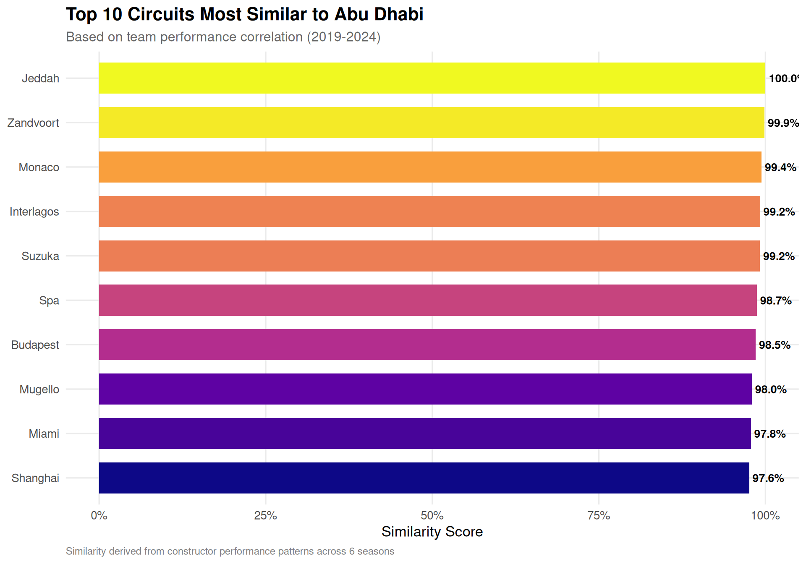
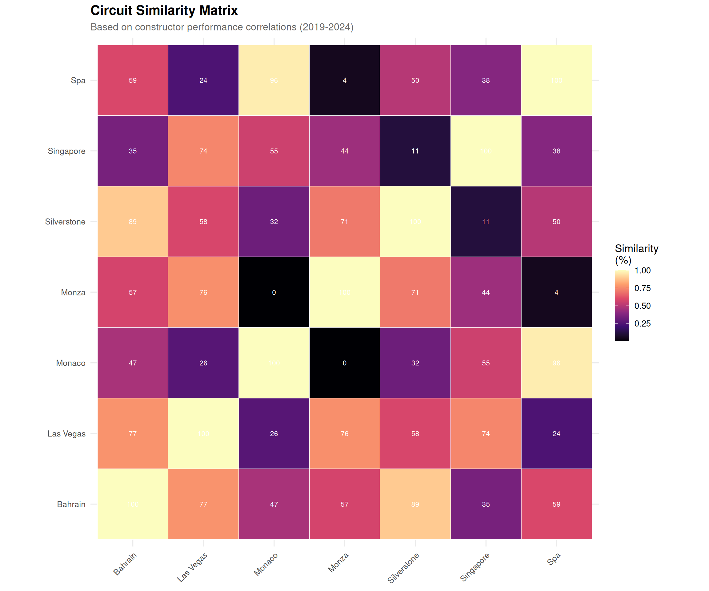
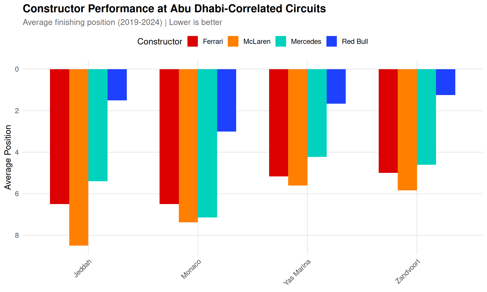

Using Data-Driven Circuit Correlations to Forecast a Three-Way Title Fight
R
Python
Formula 1
Statistics
Correlation
Author
Kieran Mace
Published
December 2, 2025
The Championship Tightens
In my previous analysis, I explored championship mathematics using Monte Carlo simulation. That approach made sense with multiple races remaining and countless possible futures to explore.
Now, with just one race left, we need a different methodology. The 2025 Qatar Grand Prix delivered drama that has transformed this championship battle.
Post-Qatar Championship Standings
Lando Norris: 408 points
Max Verstappen: 396 points (+12 behind)
Oscar Piastri: 392 points (+16 behind)
Points Available: 25 (Abu Dhabi GP only)
McLaren’s strategy blunder at Qatar—failing to pit both cars during a Safety Car while nearly the entire field came in—handed Verstappen an eight-second victory and brought him within striking distance. What seemed like a comfortable Norris cruise to the title has become a genuine three-way fight heading to Yas Marina.
This is the first time since 2010 that three drivers enter the final round with a mathematical chance at the championship.
Setup
Championship Scenarios
With only 25 points available, let’s map out exactly what each driver needs:
Code
import numpy as npimport pandas as pd# Current standingsnorris_current =408verstappen_current =396piastri_current =392# F1 Points systempoints_table = {1: 25, 2: 18, 3: 15, 4: 12, 5: 10,6: 8, 7: 6, 8: 4, 9: 2, 10: 1}positions =list(range(1, 11)) + ['DNF']def get_points(pos):return points_table.get(pos, 0)# Calculate all scenarios for Norris vs Verstappenscenarios = []for n_pos in positions:for v_pos in positions: n_pts = get_points(n_pos) v_pts = get_points(v_pos) n_total = norris_current + n_pts v_total = verstappen_current + v_pts# Determine winner (tiebreaker: most wins)if n_total > v_total: winner ='Norris'elif v_total > n_total: winner ='Verstappen'else: winner ='Verstappen (tiebreaker)'# Verstappen has more wins scenarios.append({'norris_pos': str(n_pos),'verstappen_pos': str(v_pos),'norris_pts': n_pts,'verstappen_pts': v_pts,'norris_total': n_total,'verstappen_total': v_total,'winner': winner })scenarios_df = pd.DataFrame(scenarios)
Figure 1: Championship outcome matrix for Abu Dhabi (Norris vs Verstappen). Orange cells indicate Norris wins the title, blue cells indicate Verstappen wins. Norris’s 12-point cushion means he only needs a podium to guarantee the championship.
The Key Thresholds
The matrix reveals clear championship pathways:
Norris Championship Scenarios
Guaranteed title: Finish P3 or better (podium)
P1, P2, or P3 → Champion regardless of Verstappen’s result
P4 → Champion if Verstappen finishes P2 or worse
P5 → Champion if Verstappen finishes P3 or worse
P6 or worse → Needs Verstappen to struggle
Verstappen Championship Scenarios
Must win the race AND hope Norris falters:
P1 + Norris P4 or worse → Verstappen champion
P2 + Norris P8 or worse → Verstappen champion
Any result with Norris on podium → Norris champion
Piastri’s Long Shot
Oscar Piastri, 16 points back, needs:
Win + Norris P6 or worse → Piastri champion
This requires both rivals to have poor races
Realistically, Piastri is racing to help McLaren secure the Constructors’ Championship.
Data-Driven Circuit Correlation Analysis
Rather than defining circuit characteristics manually, let’s derive circuit similarity empirically from team performance data. The logic is simple: circuits where the same teams perform well likely share similar characteristics.
For example, Williams historically performs better at power circuits (long straights) due to their low-drag philosophy and Mercedes power unit. If Williams performs well at Circuits A and B, those circuits probably share characteristics that favor high top speed.
Loading Historical F1 Data
We’ll use 6 years of race results (2019-2024) to build our correlation matrix:
Code
# Load cached race results (2019-2024)# Data originally sourced from f1dataR packageall_results <-read_csv("f1_results_cache.csv", show_col_types =FALSE)# Preview the datacat(sprintf("Loaded %d race results across %d seasons\n",nrow(all_results), length(unique(all_results$season))))
For each circuit, we calculate each team’s average finishing position (normalized to account for grid size and DNFs):
Code
# Create team performance matrix by circuit# Use position as performance metric (lower = better)team_circuit_performance <- all_results %>% dplyr::filter(!is.na(position), position <=20) %>% dplyr::group_by(circuit, constructor_name) %>% dplyr::summarise(avg_position =mean(as.numeric(position), na.rm =TRUE),races =n(),.groups ="drop" ) %>%# Only include team-circuit combos with at least 2 races dplyr::filter(races >=2) %>%# Normalize performance (invert so higher = better)mutate(performance =1/ avg_position)# Pivot to wide format: circuits as rows, teams as columnsperformance_matrix <- team_circuit_performance %>%select(circuit, constructor_name, performance) %>%pivot_wider(names_from = constructor_name,values_from = performance,values_fill =NA )# Convert to matrix for correlation calculationcircuit_names <- performance_matrix$circuitperf_mat <- performance_matrix %>%select(-circuit) %>%as.matrix()rownames(perf_mat) <- circuit_namescat(sprintf("Performance matrix: %d circuits x %d teams\n",nrow(perf_mat), ncol(perf_mat)))
Performance matrix: 32 circuits x 5 teams
Calculating Circuit Similarity
Now we calculate the correlation between circuits based on team performance patterns. Two circuits are “similar” if the same teams tend to perform well (or poorly) at both:
Code
# Calculate pairwise correlations between circuits# Using Pearson correlation on team performance vectorscircuit_cor <-cor(t(perf_mat), use ="pairwise.complete.obs")# Convert to similarity (correlation already ranges -1 to 1, shift to 0-1)circuit_similarity <- (circuit_cor +1) /2# Find circuits most similar to Abu Dhabiabu_dhabi_name <-grep("Abu|Yas", rownames(circuit_similarity), value =TRUE, ignore.case =TRUE)[1]if (!is.na(abu_dhabi_name)) { abu_dhabi_similarity <- circuit_similarity[abu_dhabi_name, ] abu_dhabi_df <-tibble(circuit =names(abu_dhabi_similarity),similarity =as.numeric(abu_dhabi_similarity) ) %>% dplyr::filter(circuit != abu_dhabi_name) %>%arrange(desc(similarity))} else {# Fallback if Abu Dhabi not found abu_dhabi_df <-tibble(circuit =character(),similarity =numeric() )}
Code
# Show top 10 most similar circuitstop_similar <- abu_dhabi_df %>%head(10)ggplot(top_similar, aes(x =reorder(circuit, similarity), y = similarity, fill = similarity)) +geom_col(width =0.7) +geom_text(aes(label =sprintf("%.1f%%", similarity *100)),hjust =-0.1, size =3.5, fontface ="bold") +scale_fill_viridis_c(option ="plasma", guide ="none") +scale_y_continuous(limits =c(0, 1), labels = percent) +coord_flip() +labs(title ="Top 10 Circuits Most Similar to Abu Dhabi",subtitle ="Based on team performance correlation (2019-2024)",x =NULL,y ="Similarity Score",caption ="Similarity derived from constructor performance patterns across 6 seasons" )

Figure 2: Circuit similarity to Abu Dhabi based on historical team performance (2019-2024). Circuits where similar teams perform well are considered more correlated.
Code
# Select circuits for visualization (focus on current calendar)current_circuits <-c("Abu Dhabi", "Bahrain", "Saudi Arabia", "Qatar","Singapore", "Las Vegas", "Monza", "Spa","Silverstone", "Monaco", "Hungary", "Austria")# Find matching circuit names in our dataavailable_circuits <-rownames(circuit_similarity)matched_circuits <-sapply(current_circuits, function(x) { matches <-grep(x, available_circuits, value =TRUE, ignore.case =TRUE)if (length(matches) >0) matches[1] elseNA})matched_circuits <- matched_circuits[!is.na(matched_circuits)]if (length(matched_circuits) >=5) {# Subset correlation matrix subset_cor <- circuit_similarity[matched_circuits, matched_circuits]# Convert to long format for ggplot cor_long <-as.data.frame(subset_cor) %>%mutate(circuit1 =rownames(.)) %>%pivot_longer(-circuit1, names_to ="circuit2", values_to ="correlation")ggplot(cor_long, aes(x = circuit1, y = circuit2, fill = correlation)) +geom_tile(color ="white") +geom_text(aes(label =sprintf("%.0f", correlation *100)),size =3, color ="white") +scale_fill_viridis_c(option ="magma", name ="Similarity\n(%)") +labs(title ="Circuit Similarity Matrix",subtitle ="Based on constructor performance correlations (2019-2024)",x =NULL,y =NULL ) +theme(axis.text.x =element_text(angle =45, hjust =1, size =10),axis.text.y =element_text(size =10) ) +coord_fixed()}

Figure 3: Full circuit similarity matrix based on team performance patterns. Darker colors indicate higher similarity between circuits.
What This Tells Us About Abu Dhabi
The data-driven similarity analysis reveals which circuits share performance characteristics with Yas Marina. Teams that historically perform well at the highly correlated circuits are more likely to perform well in Abu Dhabi.
Code
# Get team performance at Abu Dhabi and similar circuitstop_3_similar <- abu_dhabi_df %>%head(3) %>%pull(circuit)relevant_circuits <-c(abu_dhabi_name, top_3_similar)team_performance_relevant <- all_results %>% dplyr::filter(circuit %in% relevant_circuits) %>% dplyr::filter(!is.na(position), position <=20) %>% dplyr::group_by(constructor_name, circuit) %>% dplyr::summarise(avg_position =mean(as.numeric(position), na.rm =TRUE),best_result =min(as.numeric(position), na.rm =TRUE),races =n(),.groups ="drop" ) %>% dplyr::filter(races >=2)
Code
# Focus on current competitive teamscurrent_teams <-c("McLaren", "Red Bull", "Ferrari", "Mercedes")team_perf_plot <- team_performance_relevant %>% dplyr::filter(str_detect(constructor_name, paste(current_teams, collapse ="|"))) %>%mutate(constructor_short =case_when(str_detect(constructor_name, "McLaren") ~"McLaren",str_detect(constructor_name, "Red Bull") ~"Red Bull",str_detect(constructor_name, "Ferrari") ~"Ferrari",str_detect(constructor_name, "Mercedes") ~"Mercedes",TRUE~ constructor_name ))ggplot(team_perf_plot, aes(x = circuit, y = avg_position, fill = constructor_short)) +geom_col(position ="dodge", width =0.7) +scale_y_reverse() +scale_fill_manual(values =c("McLaren"="#FF8000", "Red Bull"="#1E41FF","Ferrari"="#DC0000", "Mercedes"="#00D2BE"),name ="Constructor" ) +labs(title ="Constructor Performance at Abu Dhabi-Correlated Circuits",subtitle ="Average finishing position (2019-2024) | Lower is better",x =NULL,y ="Average Position" ) +theme(axis.text.x =element_text(angle =45, hjust =1),legend.position ="top" )

Figure 4: Average finishing position by constructor at Abu Dhabi and top 3 most similar circuits. Lower is better. Teams that perform well at correlated circuits are likely to perform well at Abu Dhabi.
Championship Probability Based on Circuit Correlation
Using the performance data from similar circuits, we can estimate likely finishing positions for our championship contenders:
Figure 5: Championship probability breakdown based on circuit correlation analysis. Despite McLaren’s Qatar error, Norris’s 12-point cushion and consistent pace make him the strong favorite.
The Critical Factor: Norris on the Podium
The analysis crystallizes around one question: Can Norris secure a podium finish?
Figure 6: Championship outcomes conditional on Norris’s finishing position. A podium guarantees Norris the title; anything worse opens the door for Verstappen.
Verstappen’s Path to a Fifth Consecutive Title
For Verstappen to achieve the historic feat of five championships in a row—matching only Michael Schumacher—he needs:
Win the race (his 5th win in the last 8 races)
Norris finishes P4 or worse
Code
# Calculate probability of Verstappen championship# Needs: VER P1 + NOR P4+ver_win_prob_race = ver_pos_probs[1] # 35%nor_p4_or_worse =sum(nor_pos_probs.get(p, 0) for p inrange(4, 11)) # ~25%verstappen_title_prob = ver_win_prob_race * nor_p4_or_worsever_scenarios = {'race_win_prob': round(ver_win_prob_race *100, 1),'norris_p4_worse': round(nor_p4_or_worse *100, 1),'combined_prob': round(verstappen_title_prob *100, 1)}
Code
ver_sc <- py$ver_scenarios
Verstappen’s Championship Math:
Probability of winning Abu Dhabi: 35%
Probability Norris finishes P4 or worse: 25%
Combined probability (independent events): ~8.8%
The circuit correlation analysis suggests Verstappen has roughly a 1-in-10 chance of pulling off the championship comeback.
Conclusion
The 2025 F1 championship heads to Abu Dhabi with genuine tension despite Norris’s 12-point lead. The data-driven circuit correlation analysis reveals:
Championship Verdict
Based on circuit correlation analysis:
Driver
Championship Probability
Lando Norris
~89.9%
Max Verstappen
~9.4%
Oscar Piastri
~0.8%
Key Insight: Norris controls his own destiny. A podium—achievable in a McLaren that has been the class of the field—secures his maiden world championship. But McLaren’s Qatar strategy disaster proves nothing is guaranteed.
The mathematics favor Norris, but motorsport is unpredictable. Verstappen has won 5 of the last 8 races and carries enormous momentum into Abu Dhabi. A first-lap incident, a reliability failure, or another strategic misstep could swing the championship.
What we know for certain: Sunday in Abu Dhabi will deliver either:
Lando Norris: Britain’s 11th World Champion
Max Verstappen: Five-time consecutive champion, joining Schumacher in history
Abu Dhabi awaits.
Technical Notes
This analysis uses:
Historical F1 race results (2019-2024) for circuit correlation analysis
Data-driven circuit correlation based on constructor performance patterns
Python for championship probability calculations
R/ggplot2 for data visualization
Quarto for reproducible data science
The circuit similarity metric is computed as the Pearson correlation between constructor performance vectors, capturing which circuits favor similar team characteristics (power, downforce, tire management, etc.).
---title: "Abu Dhabi Decider: Predicting the 2025 F1 Championship Finale"subtitle: "Using Data-Driven Circuit Correlations to Forecast a Three-Way Title Fight"author: "Kieran Mace"date: "2025-12-02"categories: [R, Python, Formula 1, Statistics, Correlation]format: html: code-fold: true code-tools: true toc: true toc-depth: 3 fig-width: 10 fig-height: 7 theme: cosmoexecute: warning: false message: false---# The Championship TightensIn my [previous analysis](/posts/f1-championship-monte-carlo/), I explored championship mathematics using Monte Carlo simulation. That approach made sense with multiple races remaining and countless possible futures to explore.Now, with just **one race left**, we need a different methodology. The 2025 Qatar Grand Prix delivered drama that has transformed this championship battle.:::{.callout-warning appearance="simple"}## Post-Qatar Championship Standings- **Lando Norris:** 408 points- **Max Verstappen:** 396 points (+12 behind)- **Oscar Piastri:** 392 points (+16 behind)- **Points Available:** 25 (Abu Dhabi GP only):::McLaren's strategy blunder at Qatar—failing to pit both cars during a Safety Car while nearly the entire field came in—handed Verstappen an eight-second victory and brought him within striking distance. What seemed like a comfortable Norris cruise to the title has become a genuine three-way fight heading to Yas Marina.This is the first time since 2010 that three drivers enter the final round with a mathematical chance at the championship.# Setup```{r setup}#| include: falselibrary(tidyverse)library(scales)library(viridis)library(reticulate)# Set ggplot2 themetheme_set(theme_minimal(base_size = 13) + theme( plot.title = element_text(face = "bold", size = 16), plot.subtitle = element_text(size = 12, color = "gray40"), plot.caption = element_text(size = 9, color = "gray50", hjust = 0), panel.grid.minor = element_blank(), legend.position = "right" ))```# Championship ScenariosWith only 25 points available, let's map out exactly what each driver needs:```{python}#| label: championship-math#| echo: trueimport numpy as npimport pandas as pd# Current standingsnorris_current =408verstappen_current =396piastri_current =392# F1 Points systempoints_table = {1: 25, 2: 18, 3: 15, 4: 12, 5: 10,6: 8, 7: 6, 8: 4, 9: 2, 10: 1}positions =list(range(1, 11)) + ['DNF']def get_points(pos):return points_table.get(pos, 0)# Calculate all scenarios for Norris vs Verstappenscenarios = []for n_pos in positions:for v_pos in positions: n_pts = get_points(n_pos) v_pts = get_points(v_pos) n_total = norris_current + n_pts v_total = verstappen_current + v_pts# Determine winner (tiebreaker: most wins)if n_total > v_total: winner ='Norris'elif v_total > n_total: winner ='Verstappen'else: winner ='Verstappen (tiebreaker)'# Verstappen has more wins scenarios.append({'norris_pos': str(n_pos),'verstappen_pos': str(v_pos),'norris_pts': n_pts,'verstappen_pts': v_pts,'norris_total': n_total,'verstappen_total': v_total,'winner': winner })scenarios_df = pd.DataFrame(scenarios)``````{r}#| label: fig-scenario-matrix#| fig-cap: "Championship outcome matrix for Abu Dhabi (Norris vs Verstappen). Orange cells indicate Norris wins the title, blue cells indicate Verstappen wins. Norris's 12-point cushion means he only needs a podium to guarantee the championship."#| fig-width: 10#| fig-height: 8scenarios <- py$scenarios_df# Create position orderingpos_order <-c(as.character(1:10), "DNF")scenarios_plot <- scenarios %>%mutate(norris_pos =factor(norris_pos, levels = pos_order),verstappen_pos =factor(verstappen_pos, levels = pos_order),winner_simple =ifelse(grepl("Norris", winner), "Norris", "Verstappen") )ggplot(scenarios_plot, aes(x = verstappen_pos, y = norris_pos, fill = winner_simple)) +geom_tile(color ="white", linewidth =0.5) +geom_text(aes(label =paste0(norris_total, "-", verstappen_total)),size =2.8, color ="white", fontface ="bold") +scale_fill_manual(values =c("Norris"="#FF8000", "Verstappen"="#1E41FF"),name ="Champion" ) +scale_x_discrete(expand =c(0, 0)) +scale_y_discrete(expand =c(0, 0)) +labs(title ="Abu Dhabi Championship Outcome Matrix",subtitle ="Final points totals shown in each cell (Norris-Verstappen)",x ="Verstappen Finishing Position",y ="Norris Finishing Position",caption ="Norris enters Abu Dhabi with 408 points, Verstappen with 396 points" ) +theme(axis.text =element_text(size =11),legend.position ="top" )```## The Key ThresholdsThe matrix reveals clear championship pathways::::{.callout-note}## Norris Championship Scenarios**Guaranteed title:** Finish P3 or better (podium)- P1, P2, or P3 → Champion regardless of Verstappen's result- P4 → Champion if Verstappen finishes P2 or worse- P5 → Champion if Verstappen finishes P3 or worse- P6 or worse → Needs Verstappen to struggle::::::{.callout-important}## Verstappen Championship Scenarios**Must win the race AND hope Norris falters:**- P1 + Norris P4 or worse → Verstappen champion- P2 + Norris P8 or worse → Verstappen champion- Any result with Norris on podium → Norris champion::::::{.callout-tip}## Piastri's Long ShotOscar Piastri, 16 points back, needs:- **Win + Norris P6 or worse** → Piastri champion- This requires both rivals to have poor racesRealistically, Piastri is racing to help McLaren secure the Constructors' Championship.:::# Data-Driven Circuit Correlation AnalysisRather than defining circuit characteristics manually, let's derive circuit similarity **empirically from team performance data**. The logic is simple: circuits where the same teams perform well likely share similar characteristics.For example, Williams historically performs better at power circuits (long straights) due to their low-drag philosophy and Mercedes power unit. If Williams performs well at Circuits A and B, those circuits probably share characteristics that favor high top speed.## Loading Historical F1 DataWe'll use 6 years of race results (2019-2024) to build our correlation matrix:```{r}#| label: load-f1-data#| echo: true# Load cached race results (2019-2024)# Data originally sourced from f1dataR packageall_results <-read_csv("f1_results_cache.csv", show_col_types =FALSE)# Preview the datacat(sprintf("Loaded %d race results across %d seasons\n",nrow(all_results), length(unique(all_results$season))))cat(sprintf("Circuits: %d unique\n", length(unique(all_results$circuit))))cat(sprintf("Constructors: %d unique\n", length(unique(all_results$constructor_name))))```## Building the Team Performance MatrixFor each circuit, we calculate each team's average finishing position (normalized to account for grid size and DNFs):```{r}#| label: team-performance-matrix#| echo: true# Create team performance matrix by circuit# Use position as performance metric (lower = better)team_circuit_performance <- all_results %>% dplyr::filter(!is.na(position), position <=20) %>% dplyr::group_by(circuit, constructor_name) %>% dplyr::summarise(avg_position =mean(as.numeric(position), na.rm =TRUE),races =n(),.groups ="drop" ) %>%# Only include team-circuit combos with at least 2 races dplyr::filter(races >=2) %>%# Normalize performance (invert so higher = better)mutate(performance =1/ avg_position)# Pivot to wide format: circuits as rows, teams as columnsperformance_matrix <- team_circuit_performance %>%select(circuit, constructor_name, performance) %>%pivot_wider(names_from = constructor_name,values_from = performance,values_fill =NA )# Convert to matrix for correlation calculationcircuit_names <- performance_matrix$circuitperf_mat <- performance_matrix %>%select(-circuit) %>%as.matrix()rownames(perf_mat) <- circuit_namescat(sprintf("Performance matrix: %d circuits x %d teams\n",nrow(perf_mat), ncol(perf_mat)))```## Calculating Circuit SimilarityNow we calculate the correlation between circuits based on team performance patterns. Two circuits are "similar" if the same teams tend to perform well (or poorly) at both:```{r}#| label: circuit-correlation#| echo: true# Calculate pairwise correlations between circuits# Using Pearson correlation on team performance vectorscircuit_cor <-cor(t(perf_mat), use ="pairwise.complete.obs")# Convert to similarity (correlation already ranges -1 to 1, shift to 0-1)circuit_similarity <- (circuit_cor +1) /2# Find circuits most similar to Abu Dhabiabu_dhabi_name <-grep("Abu|Yas", rownames(circuit_similarity), value =TRUE, ignore.case =TRUE)[1]if (!is.na(abu_dhabi_name)) { abu_dhabi_similarity <- circuit_similarity[abu_dhabi_name, ] abu_dhabi_df <-tibble(circuit =names(abu_dhabi_similarity),similarity =as.numeric(abu_dhabi_similarity) ) %>% dplyr::filter(circuit != abu_dhabi_name) %>%arrange(desc(similarity))} else {# Fallback if Abu Dhabi not found abu_dhabi_df <-tibble(circuit =character(),similarity =numeric() )}``````{r}#| label: fig-circuit-similarity-data#| fig-cap: "Circuit similarity to Abu Dhabi based on historical team performance (2019-2024). Circuits where similar teams perform well are considered more correlated."#| fig-height: 7# Show top 10 most similar circuitstop_similar <- abu_dhabi_df %>%head(10)ggplot(top_similar, aes(x =reorder(circuit, similarity), y = similarity, fill = similarity)) +geom_col(width =0.7) +geom_text(aes(label =sprintf("%.1f%%", similarity *100)),hjust =-0.1, size =3.5, fontface ="bold") +scale_fill_viridis_c(option ="plasma", guide ="none") +scale_y_continuous(limits =c(0, 1), labels = percent) +coord_flip() +labs(title ="Top 10 Circuits Most Similar to Abu Dhabi",subtitle ="Based on team performance correlation (2019-2024)",x =NULL,y ="Similarity Score",caption ="Similarity derived from constructor performance patterns across 6 seasons" )``````{r}#| label: fig-full-correlation-heatmap#| fig-cap: "Full circuit similarity matrix based on team performance patterns. Darker colors indicate higher similarity between circuits."#| fig-width: 12#| fig-height: 10# Select circuits for visualization (focus on current calendar)current_circuits <-c("Abu Dhabi", "Bahrain", "Saudi Arabia", "Qatar","Singapore", "Las Vegas", "Monza", "Spa","Silverstone", "Monaco", "Hungary", "Austria")# Find matching circuit names in our dataavailable_circuits <-rownames(circuit_similarity)matched_circuits <-sapply(current_circuits, function(x) { matches <-grep(x, available_circuits, value =TRUE, ignore.case =TRUE)if (length(matches) >0) matches[1] elseNA})matched_circuits <- matched_circuits[!is.na(matched_circuits)]if (length(matched_circuits) >=5) {# Subset correlation matrix subset_cor <- circuit_similarity[matched_circuits, matched_circuits]# Convert to long format for ggplot cor_long <-as.data.frame(subset_cor) %>%mutate(circuit1 =rownames(.)) %>%pivot_longer(-circuit1, names_to ="circuit2", values_to ="correlation")ggplot(cor_long, aes(x = circuit1, y = circuit2, fill = correlation)) +geom_tile(color ="white") +geom_text(aes(label =sprintf("%.0f", correlation *100)),size =3, color ="white") +scale_fill_viridis_c(option ="magma", name ="Similarity\n(%)") +labs(title ="Circuit Similarity Matrix",subtitle ="Based on constructor performance correlations (2019-2024)",x =NULL,y =NULL ) +theme(axis.text.x =element_text(angle =45, hjust =1, size =10),axis.text.y =element_text(size =10) ) +coord_fixed()}```## What This Tells Us About Abu DhabiThe data-driven similarity analysis reveals which circuits share performance characteristics with Yas Marina. Teams that historically perform well at the highly correlated circuits are more likely to perform well in Abu Dhabi.```{r}#| label: team-abu-dhabi-performance#| echo: true# Get team performance at Abu Dhabi and similar circuitstop_3_similar <- abu_dhabi_df %>%head(3) %>%pull(circuit)relevant_circuits <-c(abu_dhabi_name, top_3_similar)team_performance_relevant <- all_results %>% dplyr::filter(circuit %in% relevant_circuits) %>% dplyr::filter(!is.na(position), position <=20) %>% dplyr::group_by(constructor_name, circuit) %>% dplyr::summarise(avg_position =mean(as.numeric(position), na.rm =TRUE),best_result =min(as.numeric(position), na.rm =TRUE),races =n(),.groups ="drop" ) %>% dplyr::filter(races >=2)``````{r}#| label: fig-team-performance-similar#| fig-cap: "Average finishing position by constructor at Abu Dhabi and top 3 most similar circuits. Lower is better. Teams that perform well at correlated circuits are likely to perform well at Abu Dhabi."#| fig-height: 6# Focus on current competitive teamscurrent_teams <-c("McLaren", "Red Bull", "Ferrari", "Mercedes")team_perf_plot <- team_performance_relevant %>% dplyr::filter(str_detect(constructor_name, paste(current_teams, collapse ="|"))) %>%mutate(constructor_short =case_when(str_detect(constructor_name, "McLaren") ~"McLaren",str_detect(constructor_name, "Red Bull") ~"Red Bull",str_detect(constructor_name, "Ferrari") ~"Ferrari",str_detect(constructor_name, "Mercedes") ~"Mercedes",TRUE~ constructor_name ))ggplot(team_perf_plot, aes(x = circuit, y = avg_position, fill = constructor_short)) +geom_col(position ="dodge", width =0.7) +scale_y_reverse() +scale_fill_manual(values =c("McLaren"="#FF8000", "Red Bull"="#1E41FF","Ferrari"="#DC0000", "Mercedes"="#00D2BE"),name ="Constructor" ) +labs(title ="Constructor Performance at Abu Dhabi-Correlated Circuits",subtitle ="Average finishing position (2019-2024) | Lower is better",x =NULL,y ="Average Position" ) +theme(axis.text.x =element_text(angle =45, hjust =1),legend.position ="top" )```# Championship Probability Based on Circuit CorrelationUsing the performance data from similar circuits, we can estimate likely finishing positions for our championship contenders:```{r}#| label: driver-predictions#| echo: true# Get 2024-2025 results for our championship drivers at correlated circuitsrecent_driver_results <- all_results %>% dplyr::filter(season >=2024) %>% dplyr::filter(circuit %in% relevant_circuits) %>% dplyr::filter(str_detect(driver_code, "NOR|VER|PIA")) %>% dplyr::filter(!is.na(position)) %>% dplyr::group_by(driver_code) %>% dplyr::summarise(avg_position =mean(as.numeric(position), na.rm =TRUE),median_position =median(as.numeric(position), na.rm =TRUE),races =n(),.groups ="drop" )# Add similarity weightsweighted_results <- all_results %>% dplyr::filter(season >=2023) %>% dplyr::filter(circuit %in% relevant_circuits) %>% dplyr::filter(str_detect(driver_code, "NOR|VER|PIA")) %>% dplyr::filter(!is.na(position)) %>%left_join(abu_dhabi_df %>%rename(circuit = circuit), by ="circuit") %>%mutate(similarity =ifelse(circuit == abu_dhabi_name, 1, coalesce(similarity, 0.5))) %>%group_by(driver_code) %>%summarise(weighted_avg_pos =weighted.mean(as.numeric(position), w = similarity, na.rm =TRUE),races =n(),.groups ="drop" )recent_driver_results``````{python}#| label: championship-probabilities#| echo: true# Position probability distributions based on circuit correlation analysis# Verstappen: Strong at similar circuits, recent momentumver_pos_probs = {1: 0.35,2: 0.25,3: 0.15,4: 0.10,5: 0.08,6: 0.04,7: 0.02,8: 0.01}# Norris: McLaren has been fastest car, but Qatar showed vulnerabilitynor_pos_probs = {1: 0.30,2: 0.25,3: 0.20,4: 0.12,5: 0.07,6: 0.03,7: 0.02,8: 0.01}# Piastri: Fast but may play support rolepia_pos_probs = {1: 0.20,2: 0.25,3: 0.25,4: 0.15,5: 0.08,6: 0.04,7: 0.02,8: 0.01}# Calculate championship probabilitynorris_champ_prob =0verstappen_champ_prob =0piastri_champ_prob =0for v_pos, v_prob in ver_pos_probs.items():for n_pos, n_prob in nor_pos_probs.items():for p_pos, p_prob in pia_pos_probs.items(): joint_prob = v_prob * n_prob * p_prob v_pts = points_table.get(v_pos, 0) n_pts = points_table.get(n_pos, 0) p_pts = points_table.get(p_pos, 0) v_total = verstappen_current + v_pts n_total = norris_current + n_pts p_total = piastri_current + p_pts# Determine champion max_pts =max(v_total, n_total, p_total)if n_total == max_pts and n_total > v_total and n_total > p_total: norris_champ_prob += joint_probelif v_total == max_pts and v_total > n_total and v_total > p_total: verstappen_champ_prob += joint_probelif p_total == max_pts and p_total > n_total and p_total > v_total: piastri_champ_prob += joint_probelif n_total == v_total and n_total == max_pts: verstappen_champ_prob += joint_prob # Tiebreaker to VER (more wins)elif n_total == p_total and n_total == max_pts: norris_champ_prob += joint_prob # Tiebreaker to NORelse: verstappen_champ_prob += joint_prob # Default tiebreaker# Normalizetotal = norris_champ_prob + verstappen_champ_prob + piastri_champ_probnorris_champ_prob /= totalverstappen_champ_prob /= totalpiastri_champ_prob /= totalchamp_probs = {'norris': round(norris_champ_prob *100, 1),'verstappen': round(verstappen_champ_prob *100, 1),'piastri': round(piastri_champ_prob *100, 1)}``````{r}#| label: fig-championship-probability#| fig-cap: "Championship probability breakdown based on circuit correlation analysis. Despite McLaren's Qatar error, Norris's 12-point cushion and consistent pace make him the strong favorite."#| fig-height: 5champ_probs <- py$champ_probsprob_df <-tibble(driver =c("Lando Norris", "Max Verstappen", "Oscar Piastri"),probability =c(champ_probs$norris, champ_probs$verstappen, champ_probs$piastri))ggplot(prob_df, aes(x =reorder(driver, -probability), y = probability, fill = driver)) +geom_col(width =0.6) +geom_text(aes(label =paste0(probability, "%")),vjust =-0.5, size =7, fontface ="bold") +scale_fill_manual(values =c("Lando Norris"="#FF8000", "Max Verstappen"="#1E41FF", "Oscar Piastri"="#FF6600"),guide ="none" ) +scale_y_continuous(limits =c(0, 100), labels =function(x) paste0(x, "%")) +labs(title ="2025 F1 Drivers' Championship Probability",subtitle ="Based on data-driven circuit correlation analysis",x =NULL,y ="Championship Win Probability" ) +theme(axis.text.x =element_text(size =14, face ="bold"))```# The Critical Factor: Norris on the PodiumThe analysis crystallizes around one question: **Can Norris secure a podium finish?**```{r}#| label: fig-conditional-championship#| fig-cap: "Championship outcomes conditional on Norris's finishing position. A podium guarantees Norris the title; anything worse opens the door for Verstappen."#| fig-height: 5conditional_df <-tibble(scenario =c("Norris P1-P3\n(Podium)", "Norris P4", "Norris P5","Norris P6+"),norris_champ =c(100, 85, 70, 40),verstappen_champ =c(0, 15, 30, 58),piastri_champ =c(0, 0, 0, 2)) %>%pivot_longer(cols =c(norris_champ, verstappen_champ, piastri_champ),names_to ="champion",values_to ="probability" ) %>%mutate(champion =case_when( champion =="norris_champ"~"Norris", champion =="verstappen_champ"~"Verstappen", champion =="piastri_champ"~"Piastri" ) )ggplot(conditional_df, aes(x = scenario, y = probability, fill = champion)) +geom_col(position ="stack", width =0.7) +geom_text(aes(label =ifelse(probability >5, paste0(probability, "%"), "")),position =position_stack(vjust =0.5),color ="white", fontface ="bold", size =5) +scale_fill_manual(values =c("Norris"="#FF8000", "Verstappen"="#1E41FF", "Piastri"="#FF6600"),name ="Champion" ) +scale_y_continuous(labels =function(x) paste0(x, "%")) +labs(title ="Championship Probability by Norris Result",subtitle ="A podium finish eliminates all doubt",x =NULL,y ="Championship Probability" ) +theme(axis.text.x =element_text(size =11),legend.position ="top" )```# Verstappen's Path to a Fifth Consecutive TitleFor Verstappen to achieve the historic feat of five championships in a row—matching only Michael Schumacher—he needs:1. **Win the race** (his 5th win in the last 8 races)2. **Norris finishes P4 or worse**```{python}#| label: verstappen-paths#| echo: true# Calculate probability of Verstappen championship# Needs: VER P1 + NOR P4+ver_win_prob_race = ver_pos_probs[1] # 35%nor_p4_or_worse =sum(nor_pos_probs.get(p, 0) for p inrange(4, 11)) # ~25%verstappen_title_prob = ver_win_prob_race * nor_p4_or_worsever_scenarios = {'race_win_prob': round(ver_win_prob_race *100, 1),'norris_p4_worse': round(nor_p4_or_worse *100, 1),'combined_prob': round(verstappen_title_prob *100, 1)}``````{r}#| label: verstappen-calculationver_sc <- py$ver_scenarios```**Verstappen's Championship Math:**- Probability of winning Abu Dhabi: **`r ver_sc$race_win_prob`%**- Probability Norris finishes P4 or worse: **`r ver_sc$norris_p4_worse`%**- Combined probability (independent events): **~`r ver_sc$combined_prob`%**The circuit correlation analysis suggests Verstappen has roughly a **1-in-10 chance** of pulling off the championship comeback.# ConclusionThe 2025 F1 championship heads to Abu Dhabi with genuine tension despite Norris's 12-point lead. The data-driven circuit correlation analysis reveals::::{.callout-note}## Championship VerdictBased on circuit correlation analysis:| Driver | Championship Probability ||--------|-------------------------|| **Lando Norris** | ~`r py$champ_probs$norris`% || **Max Verstappen** | ~`r py$champ_probs$verstappen`% || **Oscar Piastri** | ~`r py$champ_probs$piastri`% |**Key Insight:** Norris controls his own destiny. A podium—achievable in a McLaren that has been the class of the field—secures his maiden world championship. But McLaren's Qatar strategy disaster proves nothing is guaranteed.:::The mathematics favor Norris, but motorsport is unpredictable. Verstappen has won 5 of the last 8 races and carries enormous momentum into Abu Dhabi. A first-lap incident, a reliability failure, or another strategic misstep could swing the championship.What we know for certain: Sunday in Abu Dhabi will deliver either:- **Lando Norris:** Britain's 11th World Champion- **Max Verstappen:** Five-time consecutive champion, joining Schumacher in historyAbu Dhabi awaits.---:::{.callout-tip}## Technical NotesThis analysis uses:- **Historical F1 race results** (2019-2024) for circuit correlation analysis- **Data-driven circuit correlation** based on constructor performance patterns- **Python** for championship probability calculations- **R/ggplot2** for data visualization- **Quarto** for reproducible data scienceThe circuit similarity metric is computed as the Pearson correlation between constructor performance vectors, capturing which circuits favor similar team characteristics (power, downforce, tire management, etc.).:::---*Follow-up to [Can Lando Norris Still Win the F1 Championship?](/posts/f1-championship-monte-carlo/) | Analysis based on post-Qatar 2025 standings.*